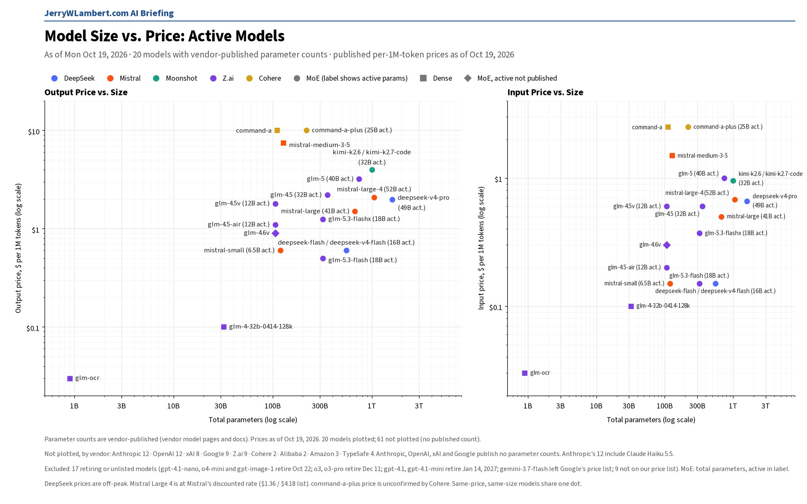
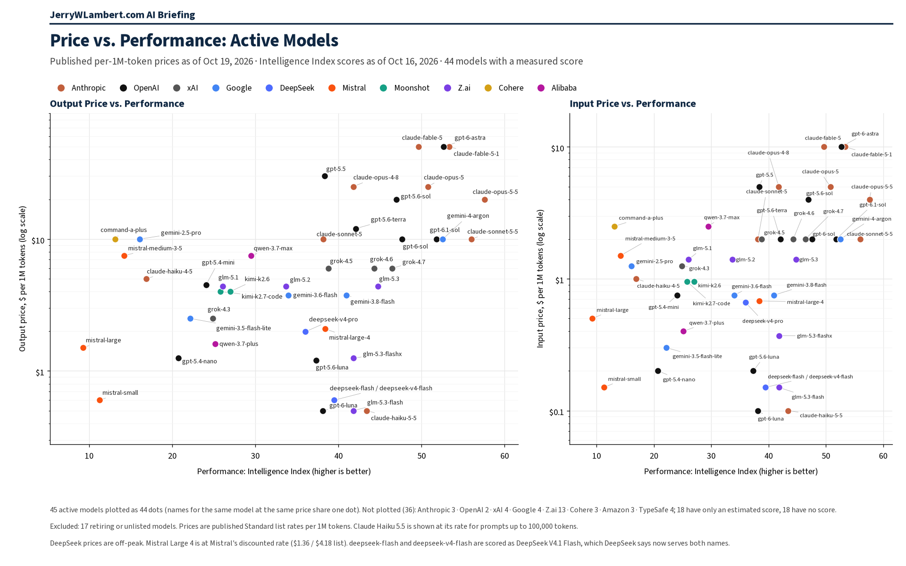

Daily Model Brief, October 19, 2026
MiniMax launched MiniMax-M3.1-Flash at $0.15 input and $0.60 output per million tokens, DeepSeek set November 1 as the billing start for search and fetch calls made through coding tools, and no vendor changed an existing token price since Friday.
Download PDFExecutive Summary
No vendor changed an existing chat or token price between Friday morning and this morning, weekend included. Meta's Muse Wonder (muse-wonder-1.0), Google's Gemini 4 Argon (gemini-4-argon), TypeSafe's Jev models and Anthropic's Claude Opus 5.5 fast mode are unchanged from Friday.
MiniMax released MiniMax M3.1 Flash (MiniMax-M3.1-Flash) today, an open-weight model it calls ultra-efficient for everyday work. Price: $0.15 input, $0.015 cached and $0.60 output per million tokens, half the standard MiniMax-M3 input and output rates, with up to a 1,000,000-token context window. MiniMax removed the M2.7, M2.5, M2.1 and M2 price tables from its price list.
DeepSeek set the billing start for its Search and Fetch APIs. Server-side search and fetch calls made through DeepSeek Harness, Claude Code or Codex are free until midnight Beijing time on November 1, which is 11:00 AM CT on Saturday, October 31; after that they bill at $0.75 per 1,000 successful requests each. Separately, deepseek-flash is now served by an upgraded model, DeepSeek-V4.1-Flash-1017, at unchanged prices.
Perplexity's Decisions API now lists pplx-decider-v1.2 at $0.02 and a new pplx-decider-flash-v1.2 at $0.01 per million input tokens, with output free. The older 27B decider names now point to v1.2. Cohere renamed North Small Translate to north-small-translate-09-2026, with no published price.
Deprecation dates are unchanged. gpt-4.1-nano, o4-mini and gpt-image-1 (OpenAI) shut down this Thursday evening, October 22 (CT), and GPT-4.1, GPT-4.1 mini, GPT-4o and GPT-4o mini follow on January 14, 2027. Microsoft's Foundry now lists December 9 retirements for three older Mistral deployments on Azure. Gemini 4 Argon's launch price of $2.00 / $0.10 / $10.00 runs through November 30, then $4.00 / $0.20 / $20.00.
Anthropic, OpenAI, Google, xAI, Moonshot, Z.ai, Mistral, Meta and TypeSafe published no token price changes. Alibaba's Qwen 3.7 Max and Plus input and output prices are confirmed unchanged, though not every Alibaba price could be confirmed. IBM Granite is unchanged at $0.0636 / $0.265 but could not be fully verified. Prices from Amazon and ByteDance could not be confirmed today; Microsoft lists no pay-as-you-go prices and Cohere still publishes no full token matrix.
What This Means for Customers
- If you run high-volume everyday work on MiniMax, test
MiniMax-M3.1-Flash. At $0.15 input and $0.60 output per million tokens it costs half of MiniMax-M3's short-context rate. MiniMax has not published its maximum output length, so check limits before you switch production traffic. - If your agents search the web through DeepSeek Harness, Claude Code or Codex, those server-side calls start billing at $0.75 per 1,000 successful Search or Fetch requests at 11:00 AM CT on October 31. DeepSeek bills only requests that return results. Track this separately from token spend before the free period ends.
- If you call
deepseek-flash, your requests now run on DeepSeek-V4.1-Flash-1017 with no code or price change. Re-run your own quality checks, because the model behind the name changed. - If you use Perplexity's Decisions API,
pplx-decider-flash-v1.2halves the input price to $0.01 per million tokens. Calls to the older 27B decider names now run on v1.2. - If you call
gpt-4.1-nano,o4-miniorgpt-image-1, you have until Thursday evening, October 22 (CT). Google'sgemini-omni-flash-previewand Veo 3.1 previews end the same day, Google's deep-research-pro preview ends October 23, and Perplexity retires its routes to older OpenAI models at 7:00 PM CT on October 23. - If you call
gpt-4o,gpt-4o-mini,gpt-4.1orgpt-4.1-mini, you still have until January 14, 2027. Testgpt-6-lunanow; it lists at $0.10 input, $0.01 cached and $0.50 output per million tokens (short context). - Claude Haiku 4.5 is still active. Anthropic lists retirement not sooner than October 15, 2026, a date that has passed, and still sets no date. Keep a tested fallback ready.
New Models and Price Changes
Prices in USD per 1M tokens.
| Vendor | Model ID | Status | Input | Cached | Output |
|---|---|---|---|---|---|
| MiniMax | MiniMax-M3.1-Flash | New Oct 19. Open-weight; up to 1,000,000-token context. One price at all context lengths. | $0.15 | $0.015 | $0.60 |
| MiniMax | MiniMax-M3 (up to 512K input) | Unchanged. Over 512K input: $0.60 / $0.12 / $2.40. | $0.30 | $0.06 | $1.20 |
| DeepSeek | Search API / Fetch API | Billing for calls through DeepSeek Harness, Claude Code and Codex starts Oct 31, 11:00 AM CT. $0.75 per 1,000 successful requests each. | Per request | — | Per request |
| DeepSeek | deepseek-flash | Now served by DeepSeek-V4.1-Flash-1017. Price unchanged (off-peak shown). | $0.15 | $0.003 | $0.60 |
| Perplexity | pplx-decider-flash-v1.2 | New. Decisions API; output free. | $0.01 | — | Free |
| Perplexity | pplx-decider-v1.2 | Replaces the v1.1-27b and v1-27b rows at the same price; older names now select v1.2. | $0.02 | — | Free |
| Anthropic | claude-opus-5-5 (fast mode) | Unchanged since Oct 16. Twice the standard rate. | $8.00 | Not listed | $40.00 |
| Meta | muse-wonder-1.0 | Unchanged (preview). | $4.00 | $0.20 | $20.00 |
| gemini-4-argon | Unchanged. Paid tier only. Launch price through Nov 30, 2026 (thinking billed as output). | $2.00 | $0.10 | $10.00 | |
| gemini-4-argon (from Dec 1, 2026) | Scheduled Standard price printed by Google. | $4.00 | $0.20 | $20.00 | |
| TypeSafe | jev-1.14.0 / jev-preview | Unchanged. jev-preview points here; output free. | $0.042 | — | $0 |
| TypeSafe | jev-1.13.0 / jev-latest | Unchanged. jev-latest still points here. | $0.042 | — | $0 |
| OpenAI | gpt-4.1 | Shuts down Jan 14, 2027; replacement gpt-6-luna. Price unchanged. | $2.00 | $0.50 | $8.00 |
| OpenAI | gpt-4.1-mini | Shuts down Jan 14, 2027; replacement gpt-6-luna. Price unchanged. | $0.40 | $0.10 | $1.60 |
| OpenAI | gpt-6-luna | Named replacement. Unchanged (short context). | $0.10 | $0.01 | $0.50 |
| IBM | granite-4-h-small | Unchanged. Could not fully re-verify today. | $0.0636 | Not listed | $0.265 |
- MiniMax M3.1 Flash: listed on MiniMax's release notes on October 19, 2026 as an open-weight model for everyday work. MiniMax says it supports up to a 1,000,000-token context window; maximum output is not published. MiniMax prints a single price row with no long-context band and no cache-write price. Priority service, set with service_tier, costs 1.5 times standard.
- DeepSeek Search and Fetch: standalone APIs billed per successful request ($0.75 per 1,000 each). DeepSeek counts a request as billable only when it returns HTTP 200 and a result: Search must return a non-empty results list and Fetch must return page content. DeepSeek says calls made through DeepSeek Harness, Claude Code or Codex already use these APIs and are free until 00:00 Beijing time on November 1, 2026 (11:00 AM CT, October 31).
- DeepSeek-V4.1-Flash-1017 (October 17): DeepSeek upgraded V4.1 Flash and says the API calling method and pricing are unchanged; use deepseek-flash. The legacy names deepseek-v4-flash and deepseek-v4-flash-vision-exp are still accepted and are served by the same model at the Flash price.
- Perplexity Decisions API: pplx-decider-latest selects pplx-decider-v1.2 and pplx-decider-flash-latest selects pplx-decider-flash-v1.2; each name bills at the rate of the model it selects.
- Other changes with no price impact: Google now says only that Gemini 4 Argon is not available on the Free tier. Meta now offers the Muse Spark Open weights for download from Meta as well as Hugging Face; there is still no Meta API price for it. Mistral lists Timestral 1.0 under its specialist models. OpenAI made prompt-to-voice generation free to create for GPT-Live on October 16; speech still bills at GPT-Live session rates.
- Prices from Amazon, Alibaba, ByteDance and IBM could not be confirmed today; Microsoft lists no pay-as-you-go prices and Cohere still publishes no full token matrix. Their last confirmed prices stand.
Deprecations
| Vendor | Model ID | Shutdown (CT) | Replacement | Note |
|---|---|---|---|---|
| OpenAI | gpt-4.1-nano o4-mini gpt-image-1 | Thu Oct 22, 2026, 7:00 PM CT | gpt-5.6-luna gpt-5.6-terra gpt-image-2.5-sunburst or gpt-image-2.5-flare | Unchanged. This Thursday. OpenAI lists Oct 23 with no time; 7:00 PM CT Oct 22 is 00:00 UTC Oct 23. |
| gemini-omni-flash-preview | Thu Oct 22, 2026 (time not stated) | gemini-omni-1.1-flash | Unchanged. | |
| veo-3.1-generate-preview veo-3.1-fast-generate-preview veo-3.1-lite-generate-preview | Thu Oct 22, 2026 (time not stated) | gemini-omni-1.1-flash | Unchanged. | |
| deep-research-pro-preview-12-2025 | Fri Oct 23, 2026 (time not stated) | deep-research-preview-04-2026 | Unchanged. | |
| Microsoft (Azure) | Ministral-3B mistral-medium-2505 mistral-small-2503 | Wed Dec 9, 2026 (time not stated) | ministral-ministral-4b-instruct mistral-medium-3-5 mistral-small-4-119b-2603 | New on Microsoft's Foundry retirement page. Applies to Azure deployments, not Mistral's own API. |
| OpenAI | gpt-4.1 (gpt-4.1-2025-04-14) gpt-4.1-mini (gpt-4.1-mini-2025-04-14) | Wed Jan 13, 2027, 6:00 PM CT | gpt-6-luna | Unchanged since Oct 14. OpenAI lists Jan 14, 2027 with no time; 6:00 PM CT Jan 13 is 00:00 UTC Jan 14. Each is the only listed snapshot, so the plain names stop too. |
| OpenAI | gpt-4o-2024-08-06 gpt-4o-2024-11-20 gpt-4o-mini-2024-07-18 | Wed Jan 13, 2027, 6:00 PM CT | gpt-6-luna | Unchanged since Oct 14. Same notice and timing. Fine-tuned versions follow the same schedule. |
| gemini-3.5-flash | Not shutting down (Google lists N/A) | gemini-3.6-flash (Google auto-route) | Unchanged since Oct 12. Google routes requests automatically. | |
| gemini-3.7-flash | Not shutting down (Google lists N/A) | gemini-3.8-flash (Google auto-route) | Unchanged since Oct 12. Same wording as gemini-3.5-flash. | |
| gemini-3.1-flash-image | No shutdown date announced | gemini-nano-banana-2.1 | Unchanged. | |
| gemini-3.1-flash-tts-preview gemini-2.5-flash-preview-tts gemini-2.5-pro-preview-tts | Tue Nov 17, 2026 (time not stated) | gemini-3.8-flash-tts or gemini-3.8-flash-lite-tts | Unchanged. | |
| gemini-3.1-flash-live-preview gemini-2.5-flash-native-audio-preview-12-2025 | Tue Nov 17, 2026 (time not stated) | gemini-3.8-live | Unchanged. | |
| Anthropic | claude-sonnet-4-5-20250929 | Mon Nov 30, 2026 (time not stated) | claude-sonnet-5-5 | Unchanged. |
| Anthropic | claude-haiku-4-5-20251001 | Not sooner than Thu Oct 15, 2026; no date set | None named | Watch item. The earliest date has passed; still active on Anthropic's deprecations page today with no date set. |
| Cohere | command-r command-r-plus | Deprecated Sep 15, 2025; no shutdown date set | command-r-08-2024 command-r-plus-08-2024 command-a-03-2025 | Closed to new customers; existing users keep access until retirement. |
- Perplexity will retire its Agent API and Orchestrator API routes to older OpenAI models (openai/gpt-5.4, gpt-5.4-mini, gpt-5.4-nano, gpt-5.2, gpt-5.1, gpt-5 and gpt-5-mini) at 7:00 PM CT on Fri Oct 23, 2026 (00:00 UTC Oct 24). Unchanged.
- Microsoft's Foundry retirement page also lists claude-opus-5-5-fast (version 2) on Azure retiring Fri Jan 15, 2027, with no replacement named.
- OpenAI's earlier notices are unchanged: gpt-5.3-codex, gpt-5.1 and gpt-5.4-nano shut down April 1, 2027, and the /v1/audio/translations endpoint shuts down February 26, 2027, replaced by v1/realtime/translations. OpenAI removed a past gpt-4-1106-preview row from its March 26, 2026 table; nothing upcoming moved.
- Google also lists deep-research-preview-04-2026 and deep-research-max-preview-04-2026 with no shutdown date announced. Anthropic, Google and Cohere show no shutdown-date changes since Friday.
- Unverified: Google's deprecation schedule still shows gemini-2.5-flash-image shutting down Mon Mar 15, 2027, with gemini-3.1-flash-lite-image as the replacement, while its price list says it shut down Oct 2, 2026. Confirm with Google before you budget either date.
Model Size vs. Price

Across the 20 active models whose vendors publish parameter counts, price rises only loosely with total size (rank correlation 0.39 on output price). Anthropic, OpenAI, xAI and Google publish no parameter counts, so their models, including Claude Haiku 5.5, GPT-6.1 Sol and Gemini 4 Argon, are not plotted. GPT-4.1 and GPT-4.1 mini now drop out as retiring models. Prices as of October 19, 2026.
Price vs. Performance

Across the 45 active models with an Intelligence Index score, price rises with performance only loosely (rank correlation 0.45 on output price). Google's Gemini 4 Argon joins the chart at 52.6 for $10 per million output tokens. Claude Haiku 5.5 leads at $0.50 or less (43.4); GPT-6.1 Sol scores 51.8 at $10. Scores as of October 16, 2026; prices as of October 19, 2026.
All times Central. Vendor prices, dates and model IDs are as of 8:36 AM CT on October 19, 2026. Chart prices are as of October 19, 2026. Performance scores are as of October 16, 2026. Items that could not be confirmed are marked unverified.